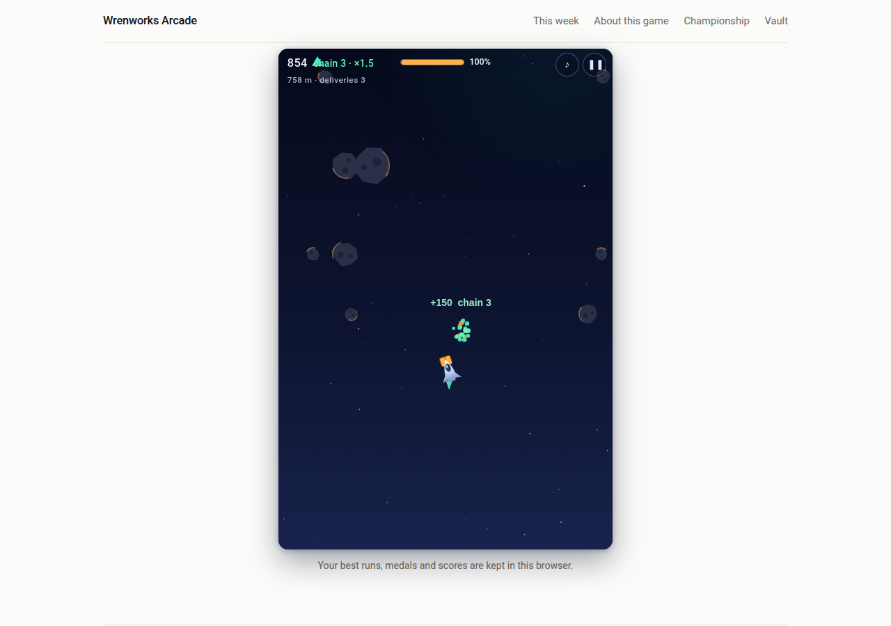
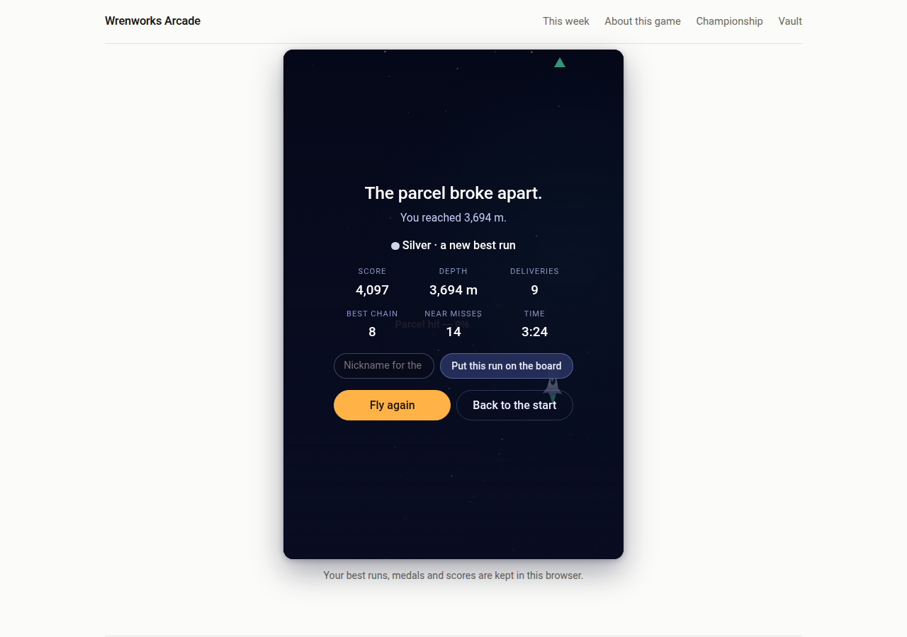

Arcade score-attack
Starfall Post
You fly the night post: a small courier skiff, one parcel, and an endless lane of falling rock. There is no finish line — the lane just gets faster, denser and stranger the deeper you go. Beacons light up along the way: fly through a ring and a delivery lands, a new parcel is strapped on, and your chain grows — every delivery in a row pays more than the last.
The rock is the problem. Clip one and the parcel takes the hit; five solid hits and it breaks apart, and the run is over. Skim past close enough to feel it and the lane pays a near-miss bonus. Deeper in, the lane throws bigger things at you, and surviving one pays a bonus of its own. There is nothing to read and nothing to memorise: it is all in the flying.



How it plays
- Steer with the arrow keys or WASD, a mouse drag, or a drag on touch screens. The ship goes where you point it and stops when you stop — no drift, no momentum to fight. Fly high to hurry, low to slow down.
- The lane: one endless lane, identical for every player — the same rocks in the same order, every run. The first minute is gentle; after that it keeps getting faster and busier until, a few minutes in, it reaches full hardness and stays there. A first run usually ends within a couple of minutes; a good run lasts five or more.
- Mini-bosses: every so often the lane throws something bigger at you — a wall of rock with one gap, a great boulder with rocks circling it, a slalom of gates. They are survived, not fought: thread through, and the lane pays a bonus. They come back harder.
- Medals: your best run earns them — bronze, silver, gold, and the Wren medal — for how far you got and how much you delivered on the way. Bronze starts at 1,200 m with 4 deliveries; the Wren asks for the deep lane and a long unbroken chain.
- One game for everybody: the same endless lane, the same rocks, for every player. No modes, no settings to tune — the score you fly is the score you get.
Your best runs
These boards are your own record, kept in your own browser.
No finished runs yet. The first line of this board is still to be earned.
When this game goes into the Vault
While Starfall Post is the current game, this page is its home. When the next game arrives, this page stays — the boards above become final, and the play button goes. If you want it back, say so in a reply to the Friday email — we read them all.
Comments
Comments are not open yet. Until they are, the like button above is the quickest way to say the game earned its week.